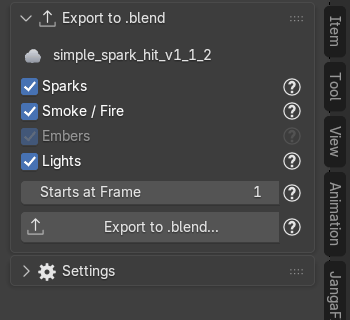
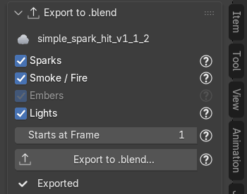
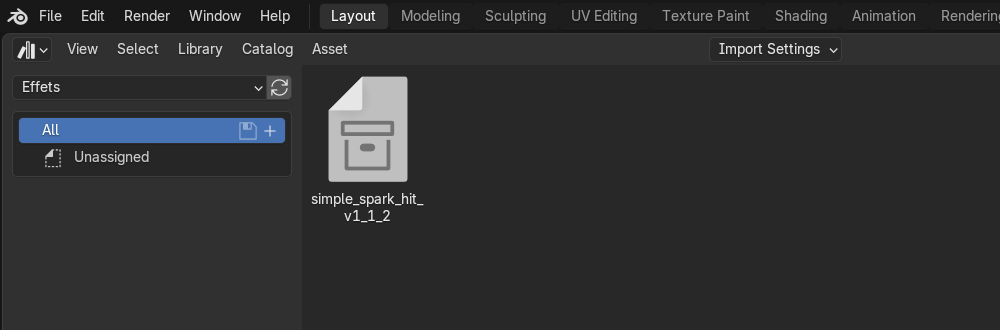
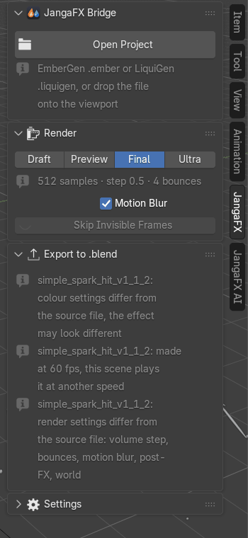

Exporter l'effet en .blend
Cas typique : vous avez réglé des étincelles EmberGen dans un fichier de travail, et vous voulez les ajouter à la
scène de votre voiture de Formule 1. La section Export to .blend écrit l'effet dans un fichier .blend
autonome que vous ajoutez ensuite à n'importe quelle scène, même sur un ordinateur sans l'add-on.
Exporter l'effet en .blend
Dans le fichier où le projet est ouvert :
- sélectionnez un objet de l'effet (ou la ligne de l'export dans la liste) : la section Export to .blend affiche le nom du projet ;
- cochez les parties à écrire :
- Sparks (LiquiGen : Liquid) : les particules avec leurs Geometry Nodes et leur matériau ;
- Smoke / Fire (LiquiGen : Volumes) : les volumes VDB avec le look EmberGen et ses lueurs ;
- Embers (LiquiGen : Bubbles) : les objets ajoutés par l'assistant IA (grisé s'il n'y en a pas) ;
- Lights : les lumières du projet (soleil, points, spots) ;
- réglez Starts at Frame (voir plus bas) ;
- cliquez sur Export to .blend... et choisissez où enregistrer le fichier.


Le fichier est terminé par un Blender d'arrière-plan : la ligne « Exporting in the background... » s'affiche (la
croix l'annule, rien n'est écrit). À la fin, la ligne verte dit « Exported


Si vous décochez Sparks alors que la lueur des étincelles dans la fumée en a besoin, les étincelles sont quand même écrites, mais cachées : la fumée reste éclairée pareil.
Le soleil éclaire aussi toute la scène qui reçoit l'effet. Pour garder seulement l'éclairage de la scène de la voiture, décochez Lights.
Choisir la frame de départ
Starts at Frame est l'image du fichier qui reçoit l'effet où joue sa première image. Par défaut, c'est celle de l'export dans votre fichier de travail. Le décalage s'applique aux VDB, aux caches Alembic, aux clés du look et aux naissances des étincelles, dans le fichier écrit seulement.
Exemple : la voiture passe devant la caméra à l'image 120 et les étincelles doivent jaillir à ce moment-là : mettez 120.
Ce qui est figé
Le fichier écrit est figé : toutes les valeurs restent celles calculées depuis le projet à l'import (la largeur des étincelles, par exemple, a été calculée d'après la résolution de rendu de votre fichier de travail). Rien n'est recalculé d'après la résolution, la caméra, la cadence ou l'étalonnage du fichier qui le reçoit, et l'add-on de ce fichier ne le modifie jamais, sauf si vous cliquez Make Editable (voir plus bas).
Le fichier contient :
- une collection au nom du projet, marquée comme asset ;
- un parent commun, l'objet «
· Root », pour tout déplacer d'un coup ; - des noms préfixés par le projet («
· ») : rien ne se mélange avec un autre effet.
Les fichiers VDB ne sont pas copiés : ils restent sur le disque, à leur chemin complet (la copie optimisée si Optimize VDB Files a été utilisé). Ne déplacez pas et ne supprimez pas le dossier des exports tant que vous utilisez l'effet.
Ajouter l'effet dans une autre scène
Ouvrez la scène qui doit recevoir l'effet (la voiture), puis au choix :
Avec File > Append : File > Append, choisissez le fichier .blend exporté, entrez dans le dossier
Collection et choisissez la collection au nom du projet.
Avec l'Asset Browser : ajoutez le dossier du fichier exporté comme bibliothèque d'assets (**Edit > Preferences
File Paths > Asset Libraries**, ou Asset Libraries selon la version), ouvrez un éditeur Asset Browser, choisissez cette bibliothèque, puis glissez l'effet dans la vue 3D.


Modifier l'effet dans la scène qui le reçoit
Sélectionnez un objet de l'effet, puis cliquez Make Editable dans la section Export to .blend du panneau JangaFX. L'effet n'est plus figé : ses exports reviennent dans la liste de l'add-on avec leurs réglages (look, corrections d'Auto Match, frame de départ), et se règlent ou se rechargent comme un import fait dans ce fichier. Le projet et les fichiers d'export doivent toujours être sur le disque.
Un effet exporté avant la version 0.15.0 n'a pas gardé ses réglages : ses exports sont retrouvés dans le dossier du projet, et les réglages de l'add-on (look, corrections d'Auto Match) reprennent leurs valeurs par défaut au prochain Reload. Un effet déjà importé dans la scène ne peut pas être rendu modifiable une deuxième fois.
Poser l'effet sur l'objet émetteur
Si l'émetteur du projet a la forme d'un objet exporté depuis Blender (nœud Import branché sur Shape) :
sélectionnez cet objet dans Blender, puis cliquez Snap to Emitter Object dans le panneau de l'export. Le parent
«
Animer le temps de l'effet
Dans le panneau de l'export, sous Starts at Frame, cliquez Animate Effect Time. Une valeur Effect Frame
apparaît : c'est la frame de la simulation montrée (le numéro des fichiers exportés). Elle est posée sur le parent
«
Au départ, elle suit la lecture normale (deux keyframes, prolongées en ligne droite). Mettez vos propres keyframes dessus (survolez la valeur, touche I) :
- déplacer l'effet : décalez les keyframes dans la timeline ;
- ralentir / accélérer : écartez ou rapprochez les keyframes ;
- figer : deux keyframes avec la même valeur ;
- inverser : une valeur qui descend.
Cadence différente (projet EmberGen à 60 fps, scène à 30 fps) : une séquence VDB a un fichier par frame du projet, elle serait jouée deux fois trop lentement à côté des étincelles (l'Alembic, lui, est en secondes). Le bouton s'appelle alors Convert 60 fps to 30 fps : Effect Frame avance de deux fichiers par frame de la scène, la fumée et les étincelles restent ensemble en temps réel, sans changer la cadence de la scène.
Override Frame (réglage du cache Alembic, onglet du modificateur Mesh Sequence Cache) : coché par Effect Frame, il fait lire au cache la frame donnée par son champ Frame (piloté) au lieu de la frame de la scène. N'y touchez pas : le X d'Effect Frame le décoche.
Hors des fichiers exportés, la fumée est cachée. Effect Frame est gardée à l'export en .blend (elle marche sans
l'add-on). Le X revient à la lecture normale. Tant qu'elle est active, Starts at Frame et Skip Invisible
Frames sont désactivés, et la visibilité (rendu / vue) de la fumée est pilotée par Effect Frame. Les braises et
bulles ajoutées par l'assistant restent sur le temps de la scène.
Déplacer l'effet
Sélectionnez l'objet «
Ce qui reste celui de la scène qui reçoit
L'effet apporte ses objets, ses matériaux et ses lumières, mais pas les réglages de la scène. Ceux-ci restent ceux de la scène de la voiture, et l'add-on n'y touche pas :
- l'étalonnage des couleurs (Color Management : View Transform, Look, exposition, courbe) ;
- la cadence (images par seconde) ;
- les réglages de rendu Cycles : pas et rebonds dans les volumes, rebonds de lumière ;
- le flou de mouvement ;
- le film transparent ;
- le post-traitement fait dans le compositing (halo, saturation, vignette…) ;
- le monde (World) ;
- la caméra : celle du projet n'est pas exportée, l'effet est vu par la caméra de la scène qui le reçoit.
Le résultat peut donc être différent de votre fichier de travail. Pour vous prévenir, la section Export to .blend de la scène qui reçoit affiche une ligne par différence (rien n'est corrigé automatiquement) :
- «
: colour settings differ from the source file, the effect may look different » : l'étalonnage diffère ; - «
: made at 60 fps, this scene plays it at another speed » : la cadence diffère ; - «
: render settings differ from the source file: volume step, bounces, motion blur, post-FX, world » : la liste dit quels réglages de rendu diffèrent.


Que faire : voir Les couleurs changent après l'ajout et La vitesse n'est pas la bonne.